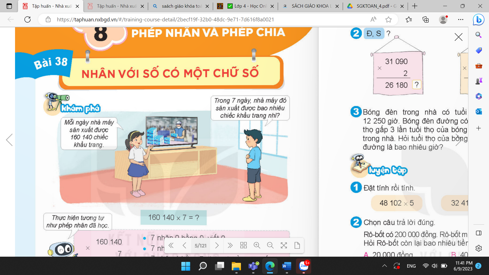
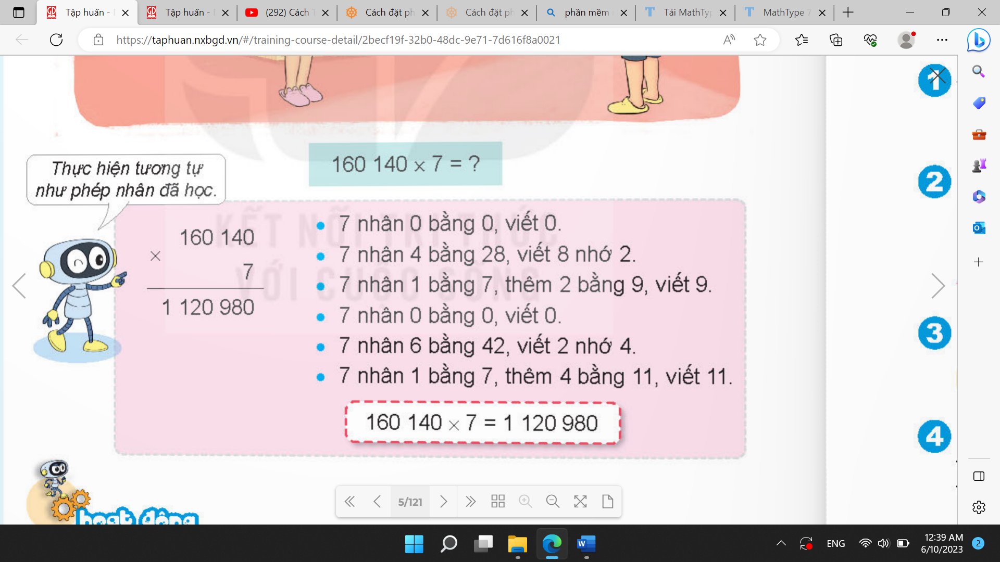
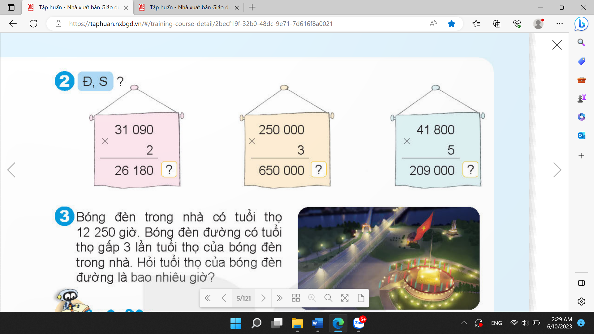
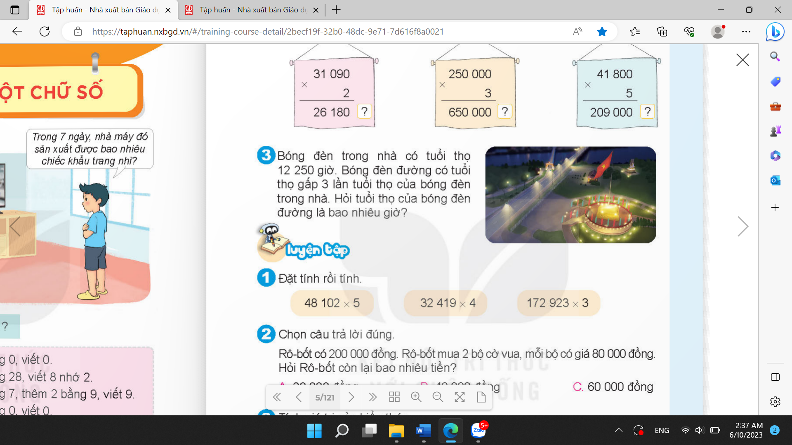

TOÁN TUẦN 19
Thời gian áp dụng: Từ ngày …………….. đến ngày …………………
CHỦ ĐỀ 8: PHÉP NHÂN VÀ PHÉP CHIA
Bài 38: NHÂN VỚI SỐ CÓ MỘT CHỮ SỐ (T1)
I. YÊU CẦU CẦN ĐẠT.
1. Năng lực đặc thù:
- Thực hiện được các phép nhân với số có một chữ số.
2. Năng lực chung.
- Năng lực tự chủ, tự học: Biết tự giác học tập, làm bài tập và các nhiệm vụ được giao.
- Năng lực giải quyết vấn đề và sáng tạo: tham gia tốt trò chơi, vận dụng.
- Năng lực giao tiếp và hợp tác: Phát triển năng lực giao tiếp trong hoạt động nhóm.
3. Phẩm chất.
- Phẩm chất nhân ái: Có ý thức giúp đỡ lẫn nhau trong hoạt động nhóm để hoàn thành nhiệm vụ.
- Phẩm chất chăm chỉ: Có ý thức tự giác học tập, trả lời câu hỏi; làm tốt các bài tập.
- Phẩm chất trách nhiệm: Biết giữ trật tự, lắng nghe và học tập nghiêm túc.
II. ĐỒ DÙNG DẠY HỌC.
- Kế hoạch bài dạy, bài giảng Power point.
- SGK và các thiết bị, học liệu phụ vụ cho tiết dạy.
III. HOẠT ĐỘNG DẠY HỌC.
Hoạt động của giáo viên | Hoạt động của học sinh | |
1. Khởi động: - Mục tiêu: + Tạo không khí vui vẻ, khấn khởi trước giờ học. + Kiểm tra kiến thức đã học của học sinh ở bài trước. - Cách tiến hành: | ||
- GV tổ chức trò chơi để khởi động bài học. + Câu 1: 9 9 ? + Câu 2: 12 1 ? + Câu 3: 23 3 ? + Câu 4: 40 0 ? - GV Nhận xét, tuyên dương. - GV dẫn dắt vào bài mới | - HS tham gia trò chơi + Trả lời: 81 + 12 + 69 + 0 - HS lắng nghe. | |
2. Khám phá: - Mục tiêu: - Thực hiện được các phép nhân với số có một chữ số. - Cách tiến hành: | ||
+ Trong thời kì dịch bệnh, đồ vật được Bộ y tế khuyến cáo sử dụng khi ra đường là đồ vật nào? - GV giới thiệu tác dụng của khẩu trang. - GV yêu cầu 2 HS phân vai đọc phần khám phá trong SGK/4.  - GV ghi phép tính 160 140 7 = ? - GV gọi 1 HS lên bảng đặt tính.
- GV nhận xét và nhắc nhở HS khi đặt tính. + Khi thực hiện phép tính nhân này, ta phải thực hiện bắt đầu từ đâu?
- GV yêu cầu HS đặt tính và thực hiện phép tính, nhắc HS chú ý đây là phép nhân có nhớ. + Khi thực hiện các phép nhân có nhớ chúng ta cần thêm số nhớ vào kết quả của lần nhân liền sau. - Yêu cầu HS tính. Nếu trong lớp có HS tính đúng thì GV yêu cầu HS đó nêu cách tính của mình, sau đó GV nhắc lại cho HS cả lớp ghi nhớ. Nếu trong lớp không có HS nào tính đúng thì GV hướng dẫn HS tính theo từng bước như SGK. Vậy: 160 140 7 1 120 980 - GV yêu cầu HS nêu lại từng bước thực hiện phép nhân. - GV nhận xét, tuyên dương. | + HS trả lời: khẩu trang, nước sát khuẩn,…
- HS lắng nghe - 2 HS thực hiện.
- 1 HS đọc phép tính: 160 140 7 - 1 HS lên bảng đặt tính, HS cả lớp đặt tính vào giấy nháp, sau đó nhận xét cách đặt tính trên bảng con.
- Ta bắt đầu tính từ hàng đơn vị, sau đó đến hàng chục, hàng trăm, hàng nghìn, hàng chục nghìn, hàng trăm nghìn (tính từ phải sang trái).

- 1 HS nhắc lại.
- HS lắng nghe rút kinh nghiệm. | |
3. HĐ thực hành: - Mục tiêu: - HS thực hiện thành thạo phép nhân số có nhiều chữ số với số có một chữ số. - Giúp HS ôn tập về phép nhân với số có một chữ số ở giải toán có lời văn. - Cách tiến hành: | ||
Bài 1: Đặt tính rồi tính. (làm cá nhân) - GV gọi HS đọc và xác định yêu cầu bài tập. 27 283 3 40 819 5 374 519 2 - GV yêu cầu HS làm phép tính: 27 283 3
- Gọi HS nhận xét, bổ sung, sửa bài (nếu cần). - GV nhận xét - GV kiểm tra bảng con của HS - GV nhận xét, củng cố + Để thực hiện phép tính nhân với số có một chữ số ta làm thực hiện thế nào?
- GV yêu cầu HS làm các phép tính còn lại vào vở.
- GV gọi HS nhận xét, bổ sung, sửa bài (nếu cần). - GV kiểm tra vở HS làm nhanh. - GV nhận xét tuyên dương. Bài 2: Đ – S? (làm việc nhóm 2) - GV gọi HS đọc và xác định yêu cầu bài tập.  - GV yêu cầu HS thảo luận nhóm đôi. - Mời 1-2 nhóm trình bày.
- GV nhận xét, tuyên dương + Vì sao phép tính thứ nhất sai? Bài 3: (làm việc cá nhân)  - GV gọi HS đọc đề. - GV yêu cầu HS phân tích đề theo nhóm đôi. + Đề bài cho biết gì? Cần tính gì? + Làm thế nào để tính? - Yêu cầu HS làm bài vào vở
- Gọi HS nhận xét bài trên bảng. - GV nhận xét - Yêu cầu HS đổi vở kiểm tra. |
- 1 HS đọc.
- 1 HS làm bảng lớp, lớp làm bảng con.
- HS đưa bảng
- Ta bắt đầu tính từ hàng đơn vị, sau đó đến hàng chục, hàng trăm, hàng nghìn, hàng chục nghìn, hàng trăm nghìn (tính từ phải sang trái). - 2 HS làm bảng lớp, lớp làm vở.
- 1 HS đọc đề
- HS thực hiện - Nhóm trình bày. HS nhận xét Đ Đ S  - HS trả lời
- HS đọc - HS thảo luận nhóm đôi.
- 1 nhóm đại diện trình bày. - HS trả lời - 1 HS làm bảng lớp, lớp làm vở. Bài giải Tuổi thọ của bóng đền đường là: 12 250 3 = 36 750 (giờ) Đáp số: 36 750 giờ - HS nhận xét - HS lắng nghe. - HS đổi vở kiểm tra. | |
4. Vận dụng trải nghiệm. - Mục tiêu: + Củng cố những kiến thức đã học trong tiết học để học sinh khắc sâu nội dung. + Vận dụng kiến thức đã học vào thực tiễn. + Tạo không khí vui vẻ, hào hứng, lưu luyến sau khi học sinh bài học. - Cách tiến hành: | ||
- GV tổ chức vận dụng bằng các hình thức như trò chơi Ai nhanh ai đúng? sau bài học để học sinh thực hiện nhanh phép tính nhân với số có một chữ số. - Ví dụ: GV thẻ các phép tính nhân và thẻ các kết quả. Chia lớp thành 2 đội A và B, phát thẻ cho 2 đội. Cho 2 đội 3 phút thảo luận. Mời 2 đội tham gia trải nghiệm. - Nhận xét, tuyên dương. | - HS tham gia để vận dụng kiến thức đã học vào thực tiễn.
- HS tham gia chơi.
- HS lắng nghe để vận dụng vào thực tiễn. | |
IV. ĐIỀU CHỈNH SAU BÀI DẠY: Phần Khám phá, GV có thể cho HS tự thảo luận nhóm để tìm ra phép tính và tự nêu cách đặt tính sau đó mời các nhóm trình bày và nhận xét, GV chốt ý đúng. | ||
------------------------------------------------